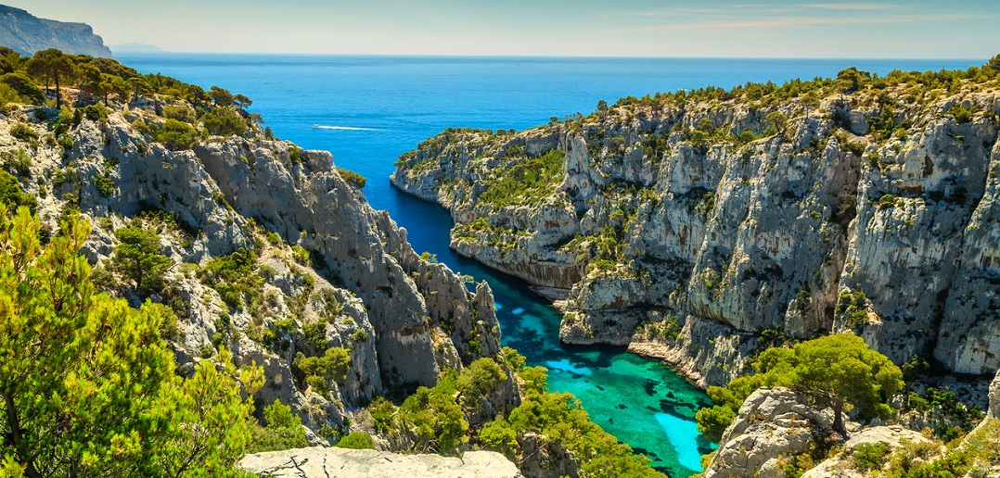
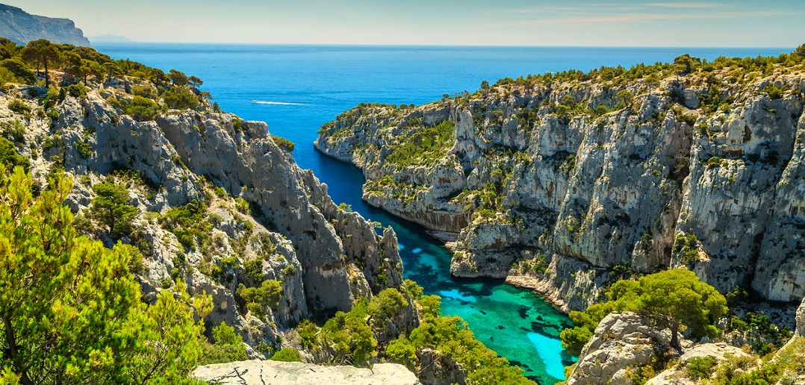
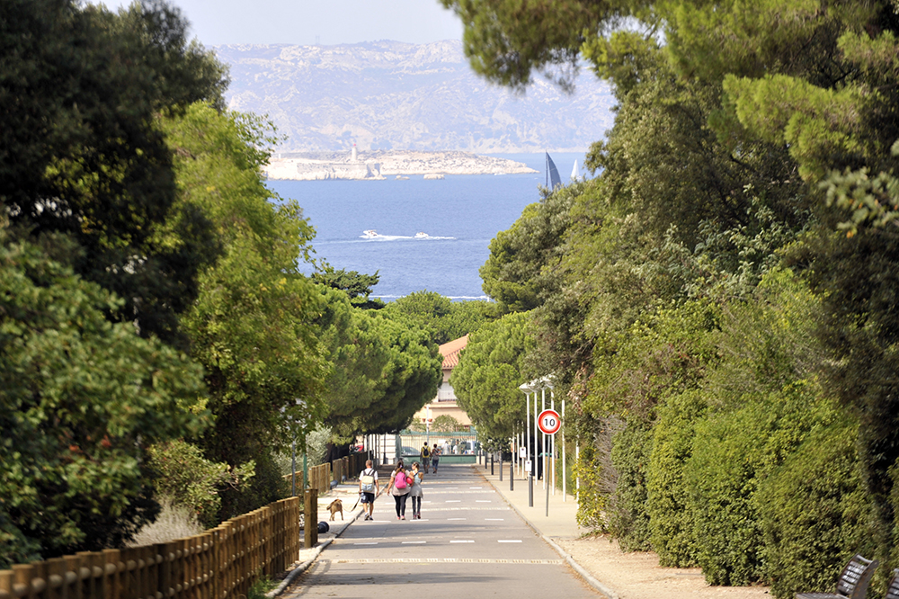
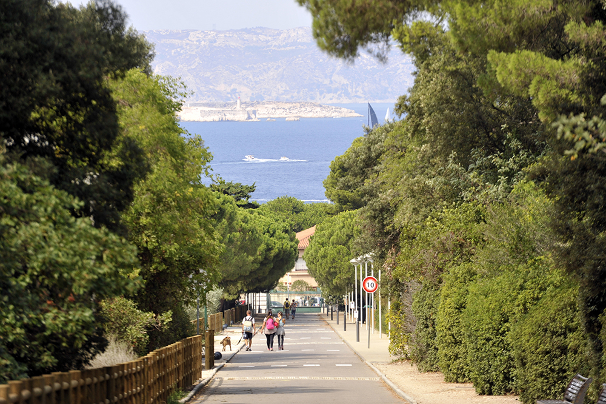

Les parcs publics
Les 5 meilleurs parc public de marseille :
Parc national
des calanques
On pourrait se croire au maldives mais
nous sommes bel et bien
a Marseille dans les eaux claires
de la méditerranée.
 

palais longchamp
Ce parc possède un magnifique palais
et un vaste jardin que vous pourrez
visiter seul ou en famille.
Parc du
pharo
Ce parc contient le palais du pharo
avec une magnifique vu sur la mer
et une vaste pelouse.

parc du 26eme
centenaire
Cette ancienne gare a été
transformé en magnifique parc.
(vous pourrez meme retrouver certains rails)


Parc du
pastré
Ce parc, au pied d'une montagne,
possède une vaste foret
excellent pour les amateurs de verdure.


 
